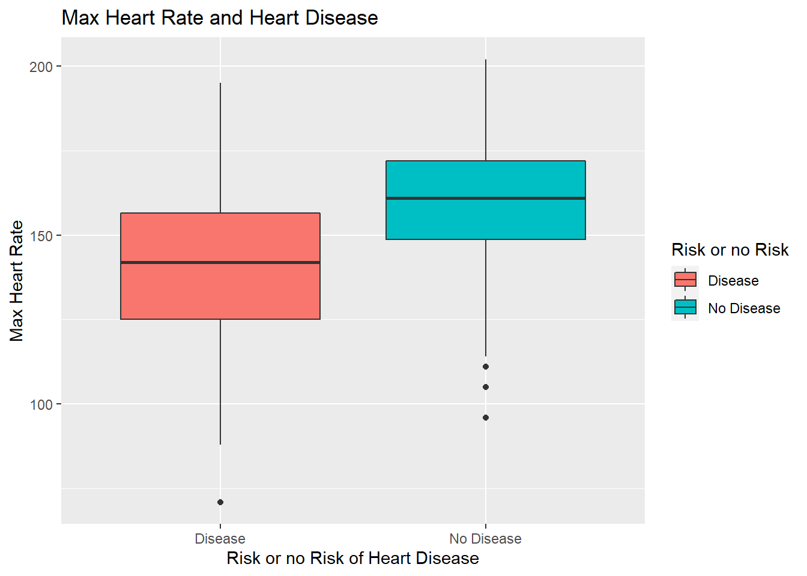

This project uses the cleveland heart disease dataset to discover what factors may increase a persons likelihood of developing heart disease. The factors I am going to focus on include:
First I’ll read the data in.
head(hd_data) %>% kbl(caption = "Raw Data") %>% kable_classic(full_width = T, html_font = "Cambria")| age | sex | cp | trestbps | chol | fbs | restecg | thalach | exang | oldpeak | slope | ca | thal | class |
|---|---|---|---|---|---|---|---|---|---|---|---|---|---|
| 63 | 1 | 1 | 145 | 233 | 1 | 2 | 150 | 0 | 2.3 | 3 | 0 | 6 | 0 |
| 67 | 1 | 4 | 160 | 286 | 0 | 2 | 108 | 1 | 1.5 | 2 | 3 | 3 | 2 |
| 67 | 1 | 4 | 120 | 229 | 0 | 2 | 129 | 1 | 2.6 | 2 | 2 | 7 | 1 |
| 37 | 1 | 3 | 130 | 250 | 0 | 0 | 187 | 0 | 3.5 | 3 | 0 | 3 | 0 |
| 41 | 0 | 2 | 130 | 204 | 0 | 2 | 172 | 0 | 1.4 | 1 | 0 | 3 | 0 |
| 56 | 1 | 2 | 120 | 236 | 0 | 0 | 178 | 0 | 0.8 | 1 | 0 | 3 | 0 |
I’ll use the ‘mutate’ function from dplyr to recode class into hd, which will be 0 if no risk of heart disease is present and 1 if there is a risk present. I’ll also recode sex to a factor so there are only two levels of male and female.
hd_data <- hd_data %>% mutate(hd = ifelse(class > 0, 1, 0))
hd_data <- hd_data %>% mutate(sex = factor(sex, levels = 0:1, labels = c("Female", "Male")))| age | sex | cp | trestbps | chol | fbs | restecg | thalach | exang | oldpeak | slope | ca | thal | class | hd |
|---|---|---|---|---|---|---|---|---|---|---|---|---|---|---|
| 63 | Male | 1 | 145 | 233 | 1 | 2 | 150 | 0 | 2.3 | 3 | 0 | 6 | 0 | 0 |
| 67 | Male | 4 | 160 | 286 | 0 | 2 | 108 | 1 | 1.5 | 2 | 3 | 3 | 2 | 1 |
| 67 | Male | 4 | 120 | 229 | 0 | 2 | 129 | 1 | 2.6 | 2 | 2 | 7 | 1 | 1 |
| 37 | Male | 3 | 130 | 250 | 0 | 0 | 187 | 0 | 3.5 | 3 | 0 | 3 | 0 | 0 |
| 41 | Female | 2 | 130 | 204 | 0 | 2 | 172 | 0 | 1.4 | 1 | 0 | 3 | 0 | 0 |
| 56 | Male | 2 | 120 | 236 | 0 | 0 | 178 | 0 | 0.8 | 1 | 0 | 3 | 0 | 0 |
First I’ll recode the “hd” variable to read as “disease” if a risk is present and " no disease" if it is not present.
hd_data%>%mutate(hd_labelled = ifelse(hd == 0, "No Disease", "Disease")) -> hd_data

Based on the plots, it appears that those with heart disease tend to be older, are more likely to be male and have a lower maximum heart rate.
##
## Call:
## glm(formula = hd ~ age + sex + thalach, family = "binomial",
## data = hd_data)
##
## Deviance Residuals:
## Min 1Q Median 3Q Max
## -2.2250 -0.8486 -0.4570 0.9043 2.1156
##
## Coefficients:
## Estimate Std. Error z value Pr(>|z|)
## (Intercept) 3.111610 1.607466 1.936 0.0529 .
## age 0.031886 0.016440 1.940 0.0524 .
## sexMale 1.491902 0.307193 4.857 1.19e-06 ***
## thalach -0.040541 0.007073 -5.732 9.93e-09 ***
## ---
## Signif. codes: 0 '***' 0.001 '**' 0.01 '*' 0.05 '.' 0.1 ' ' 1
##
## (Dispersion parameter for binomial family taken to be 1)
##
## Null deviance: 417.98 on 302 degrees of freedom
## Residual deviance: 332.85 on 299 degrees of freedom
## AIC: 340.85
##
## Number of Fisher Scoring iterations: 4| term | estimate | std.error | statistic | p.value |
|---|---|---|---|---|
| (Intercept) | 3.1116105 | 1.6074664 | 1.935723 | 0.0529016 |
| age | 0.0318857 | 0.0164398 | 1.939541 | 0.0524355 |
| sexMale | 1.4919022 | 0.3071926 | 4.856569 | 0.0000012 |
| thalach | -0.0405414 | 0.0070730 | -5.731897 | 0.0000000 |
At a p-value of 0.05, if the person is male and their maximum heart rate are significant predictors of their risk of heart disease.
A logistic regression calculates the log of the odds ratio.The odds ratio is easier to interpret. It is used to quantify how strongly the presence or absence of a property is associated with the presence or absence of the outcome.
So in our case, When the OR is greater than 1, we say the variable increases the Odds of having heart disease. Otherwise, we say the variable decreases the Odds of having heart disease.
| term | estimate | std.error | statistic | p.value | OR |
|---|---|---|---|---|---|
| (Intercept) | 3.1116105 | 1.6074664 | 1.935723 | 0.0529016 | 22.4571817 |
| age | 0.0318857 | 0.0164398 | 1.939541 | 0.0524355 | 1.0323995 |
| sexMale | 1.4919022 | 0.3071926 | 4.856569 | 0.0000012 | 4.4455437 |
| thalach | -0.0405414 | 0.0070730 | -5.731897 | 0.0000000 | 0.9602694 |
The interpretation of this odds ratio would be that if the person is male, they are 4.4 times more likely to be at risk of heart disease. For a one unit increase in heart rate, the person lowers their odds of of heart disease by 0.96.
I’ll get the predicted probability of heart disease using the model and create a cut-off (0.5) to say whether it is more or less likely if this person has heart disease.
This could be implemented as a decision rule for clinical use. In practice, when an individual comes in for a health check-up, the doctor would like to know the predicted probability of heart disease for specific values of the predictors. In this case, those predictors would be
# get the predicted probability in our dataset using the predict() function
pred_prob <- predict(model,data = hd_data, type = "response")
head(pred_prob) %>% kbl(caption = "Pred. Prob. for first 5 Variables") %>% kable_classic(full_width = F, html_font = "Cambria")| x |
|---|
| 0.6297393 |
| 0.9138346 |
| 0.8190629 |
| 0.1420992 |
| 0.0721448 |
| 0.3042244 |
# create a decision rule using probability 0.5 as cutoff and save the predicted decision into the main data frame
hd_data$pred_hd <- ifelse(pred_prob >= 0.5, 1,0)If we look at the heart disease dataframe, there is now a column for the probability of heart disease for every individual. I’ll create an example to show how we can add new individuals with this information to predict their probability of heart disease.
This person will be a 45 year old female with a maximum heart rate of 150.
# # create a newdata data frame to save a new case information
newdata <- data.frame(age = 45, sex = "Female", thalach = 150)
# # predict probability for this new case and print out the predicted value
p_new <- predict(model,newdata, type = "response")## 1
## 0.1773002This individual did not have a high probability of heart disease.
I’ll use accuracy, area under curve and a confusion matrix to show how well the model does with predicting heart disease.
## [1] "AUC= 0.706483593612915"## [1] "Accuracy= 0.70957095709571"## [1] "Classification Error= 0.29042904290429"## Predicted Status
## True Status 0 1
## 0 122 42
## 1 46 93We can see that this model had a roughly 70% accuracy.
Some ways the model could be optimzed include but are not limited to